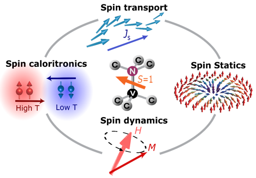
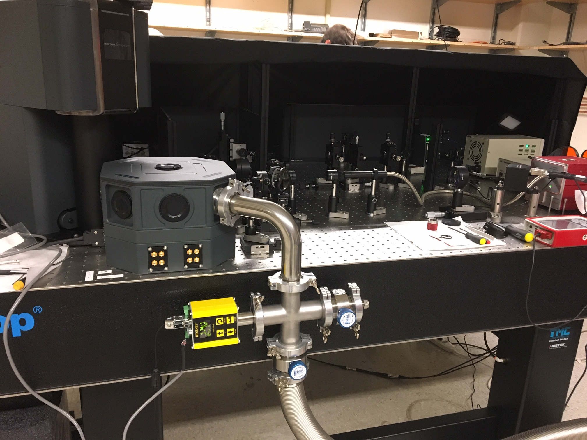

Research
-
Nitrogen Vancancy (NV) in Diamond

Recently, the S = 1 single electron spin associated with the nitrogen-vacancy (NV) defect in diamond has emerged as a versatile tool for quantum information processing and nanoscale magnetic imaging with an unprecedented resolution at ambient conditions. As a sensitive probe of magnetic field and temperature, NV centers have been successfully applied to study nanoscale bio-magnetism, nuclear spins on the surface, electrical and spin properties of quantum materials. Our research focuses on developing quantum sensing platform based on NV centers to study various properties (spin, charge, and heat, etc) of condensed matter systems at the nanometer scale. We are developing measurement systems at variable temperature and magnetic field ranges. We also fabricate diamond nanostructure such as nanobeam or diamond cantilever containing NV center to increase the optical collection efficiency and achieve real space image at the nanoscale.
-
Spintronics and spin-based quantum information
 As modern electronics shrinks towards the sub-micron regime and the search for new paradigms grows more urgent, material scientists have increasingly focused on spin as the new frontier for innovation in the areas of information technology applications and fundamental condensed matter research. My research concentrates on this area, called spintronics. Spin offers one major advantage over charge in the area of energy dissipation: Unlike systems using charge, systems based on spin to carry information can minimize Joule heating. In the last ten years, several studies have accordingly explored such phenomena as magnon Bose-Einstein condensation, spin superfluidity, and spin-momentum locking in topological insulators. Spin, however, also presents a major challenge, namely that it naturally decays in a wide range of materials. Given this, its study requires miniaturization of device dimension and a sensitive measurement tool with a nanoscale spatial resolution. To solve this problem, our research program seek to explore nanoscale spin phenomena in quantum materials with the state-of-the-art NV center-based spin imaging techniques integrated with microwave and electrical transport measurement capabilities.
-
Layered materials

Layered materials provide a unique platform to study the thickness-dependent physics as well as explore novel phenomena at the two-dimensional (2D) limit. Also, those materials usually show exotic properties at very small scale. Our goal is to introduce an elegant method to investigate various layered materials (transition metal dichalcogenides, spin liquid, 2D magnet and superconductors, etc). Especially, we develop a novel and unique platform to transfer those material flakes with nanometer proximity to NV centers in diamond, which is the key to ensure high sensitivity to detect monolayer material as well as nanometer scale spatial resolution.
-
Facilities

Our primary tools will be home-built nitrogen vacancy (NV) center based optical measurement setups, which allow of detecting very weak magnetic field (as small as nano Tesla) generated by materials with a few nanometer spatial resolution. To study various different quantum materials, we build NV confocal measurement system at both ambient condition and at cryogenic temperature. Currently we have a room temperature and a variable temperature scanning confocal NV measurement systems. Figure to the left is our variable temperature (4-350K) NV measurement system which is operational. We will also develop the start of art scanning probe magnetometry based on NV center to achieve real space imaging. For NV magnetometry, the spatial resolution and measurement sensitivity is determined by the distance between the NV center and the sample being studied. We use nanofabrication facility to make diamond nano-structures such as nanobeam and cantilevers to ensure nanometer distance between NV center and measured material systems. Our group has full access to the magnetic characterization facilities at UCSD Center for Memory and Recording Research (CMRR). We also use transport and microwave techniques such as ferromangetic resonance spectroscopy, spin pumping, magneto-transport to study macroscopic electronic and magnetic properties.